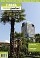

Disclaimer: These pages are not actively maintained, and some of the practical information on the site is out of date. I am working on a new version of the site that will focus more on my photos and memories of travel in Southeast Europe, and less on practical details that too easily become obsolete. In the meantime, please treat the information here with caution.
Albania :: Books
Travel Guides
Albania has never been a major tourist destination, so don't expect to find the shelves of your local bookstore groaning under the weight of competing guides to Albania. Short descriptions of the country appear in four of Lonely Planet's regional guides listed in the Overview section: Europe on a Shoestring, Eastern Europe, Mediterranean Europe, and Southeastern Europe. Naturally the last of these includes the most detail, although even this has far less information than the Bradt guide (below).
Albania is a fast-changing country, so don't expect any guidebook to be completely up to date.
 |
Albania - The Bradt Travel Guide (5th edition published January 2015) - Gillian GloyerThis is one of the best of Bradt's Balkan guides, and is ideal if you are visiting Albania for more than a short trip. The author has spent a lot of time in Albania and clearly knows the country well. Each successive edition has contained substantial new material so it's worth getting the latest version. |
More about this book: Amazon (USA)Amazon (UK) |
 |
Traveller Guide Albania (2nd edition published March 2011) - Thomas Cook PublishingThe only alternative to Bradt in English that I am aware of, but becoming dated at this stage |
More about this book: Amazon (USA)Amazon (UK) |
|  |
Tirana In Your PocketComprehensive city guide, available as a free download and also sold as a print guide in Tirana. IYP guides to Shkodra and Korçë were produced many years ago and may still be of some interest; they are no longer promoted but you may be able to find the PDF versions by googling. |
More about this book: In Your Pocket |
 |
Blue Guide: Albania and Kosovo (3rd edition published March 2001) - James PettiferMuch has changed in Albania since the Blue Guide was published, so many of the practical details have inevitably become outdated. Even so, it's worth tracking down a second-hand copy if you are planning to explore Albania in depth, thanks to its outstanding level of detail. The author seems to have tracked down every church, mosque, and ruined castle of potential interest, no matter how remote - a heroic effort given that the number of foreign tourists visiting Albania was even smaller in 2001 than it is now. |
More about this book: Amazon (USA)Amazon (UK) |
Background Reading
In addition to the books listed below, the Overview includes several works about Balkan history that may be of interest.
 |
The Accursed Mountains: Journeys in Albania - Robert Carver
An account of the author's travels around Albania in the chaotic years of the mid-1990s, just before it became even more chaotic in 1997. His adventures are entertaining enough, but his relentlessly negative opinions of the Albanian people become tiresome after a while. Many of his criticisms may be justifiable, but at times he seems to be critical just for the sake of it, as when he lists some names that an educated Albanian has never heard of - is it really so terrible to be unaware of FR Leavis or George Steiner? Several reviewers who know Albania well have suggested that parts of the story have been exaggerated or even simply made up. |
More about this book: Amazon (USA)Amazon (UK) |
 |
Spring Flowers, Spring Frost - Ismail Kadare:
Kadare is Albania's most famous writer by far; this is one of his more recent novels. The central character is an artist whose peaceful life in a small town is disturbed both by the chaos of post-Communist Albania and by the unexpected reappearance of an ancient tradition. Although many reviewers praise the novel highly, I must admit that it didn't make much impression on me. The protagonist seems to be constantly confused, wondering, drowsy; his vagueness extends to the story as a whole. And I really don't know why Leonid Brezhnev makes an appearance near the end. As with most of Kadare's novels, this has been translated from Albanian to English via French rather than directly, which probably doesn't help. |
More about this book: Amazon (USA)Amazon (UK) |